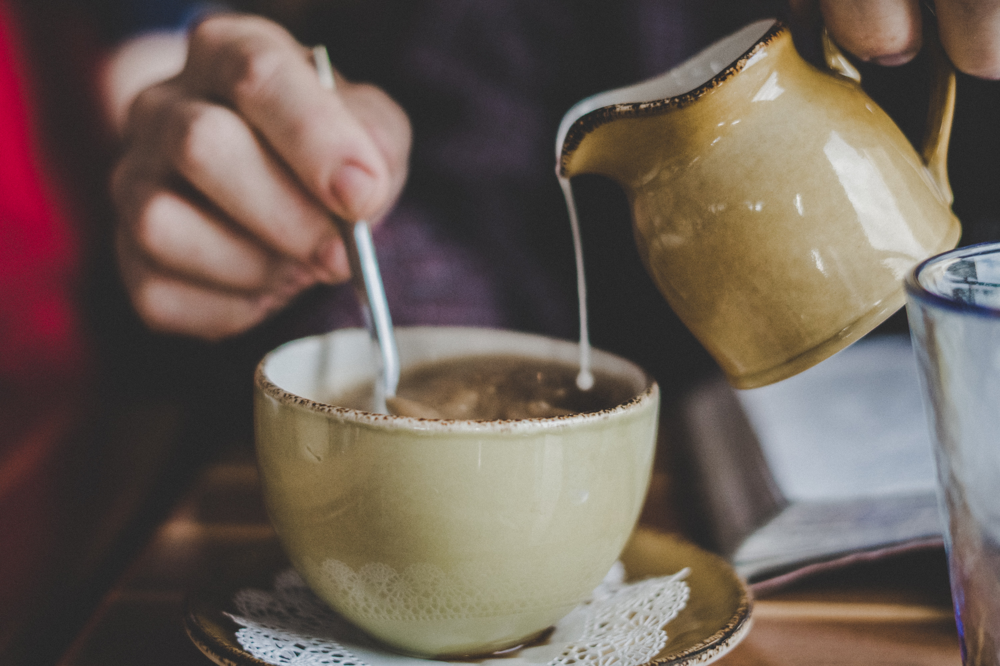

How to make Tea

People all over the world have been drinking tea for thousands of centuries, and for good
reason. Numerous studies have shown that a variety of teas may boost your immune system,
fight off inflammation, and even ward off cancer and heart disease. While some brews
provide more health advantages than others, there’s plenty of evidence that regularly
drinking tea can have a lasting impact on your wellness. At the very least, tea is a
flavourful way of getting enough fluid into your body each day.
ingredients
- Tea Bag
- Water
- Milk - Dairy/Plant based(Optional)
- Sugar/Honey (Optional)
preparation
-
Run the tap a little so the water's nicely aerated, and only boil it once to
keep the oxygen level up. Oxygen in water helps flavour!
-
Pop your chosen tea bag into your mug (always a big mug)
-
Pour the hot water over the tea bag and stir briefly.
-
Tea needs time to unlock all its flavour, so give it 3-4 minutes to do its
thing. This is a perfect time to grab a sneaky cookie or daydream about life
after covid (I dream about a career in DevOps or web development).
-
Before removing the tea bag, gently squish it with a spoon against the side of
the mug. Not too much or you'll make it bitter.
-
If you want, throw in some milk or sugar or honey or nothing else at all.
-
Enjoy!